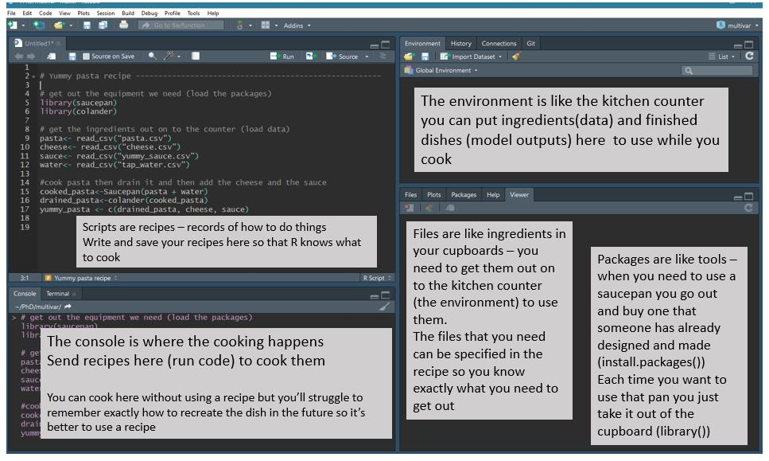

R-Intro ISG
Benedikt Fritz
July 2019
1 Intro and Agenda
Welcome to this introductory R Intro tutorial. The following paragraphs will get you familiar with R and hopefully make you full-fledged R users in no time.
By the end of tomorrow, everybody of you will not only understand the basic functionality of R(Studio) but also be able to
efficiently manage data
write reproducible and easy to read code
produce beautiful data visualizations
generate straight forward regressions.
~75% of our class will be hands-on - e.g. we solve coding problems from real life data (which are relevant for ISG) together. All code and necessary data can be downloaded from this site.
Die Seite ist in Englisch, weil alle meine anderen R Tutorien/Kurse auch in Englisch waren - please forgive me.
1.1 Agenda
We have two days, 4 hours per day.
Day 1
- R Basics, Workflow in R Studio and Objects (2.5h)
- Data Management and tidyverse (2.5h)
- Quick Intro into the tidyverse and it’s data management tools
- Eurostat Example
Day 2
- Data visualizationsand the tidyverse (3.5h)
- Quick intro into ggplot
- Eurostat Example
- Maps
- Other (1h)
- Regressions
- knitr, R Notebooks
- Further Information
1.2 Why R
R is a powerful programming language that is especially well-suited for statistical analyses and the creation of graphics. It is one of the most widely used software packages in Data Science and Applied Statistics.
It is free and constantly extended by a large user community - guaranteeing that latest innovations from vizualizations to machine learning are always up to date in the R universe. There are over 15.000 approved R packages (reusable R functions, see below) and the number is growing exponentially. At the same time, the R-Foundation (supported by Microsoft and Google) gives credibility to the continuance of base R itself.
Finally, this might be relevant in our context: Visualizations are way prettier and user friendlier than anything Stata or SPSS even remotely have to offer (see the R-Graph Gallery for a quick glimpse into what is possible).
2 Technical Set-Up
2.1 Installation
R is the software executing your commands.
BUT: R itself is not quite user-friendly - the pane is inconvenient to maneuver. Therefore, there are various interfaces that can be added on top on the plain R. The most common one is R-Studio.
Before you start: If you are not the Admin on your Laptop/PC: Make sure to install both R and RStudio in C:/Users/<YOUR_USERNAME>/FOLDER_OF_YOUR_CONVENIENCE and not C:/Program Files/. Otherwise (even if you happen to know the Admin PW) R will not function properly. I recommend to create a folder R, e.g.: `C:/Users/<YOUR_USERNAME>/R
Download R:
Download R Studio:
Trouble Shooting
If you have any problems with the installation process follow these pages
2.2 First Step
After having successfully installed R and R-Studio open RStudio (NEVER open R directly, always access it through RStudio), press Ctrl+Shift+N or click on the top left icon and select R Script. Then you should see 4 different panes. Their functionality has been brilliantly explained by you should see something like this (credits: Jessica Ward) 
On the lower right hand side various other information about your current project can be retrieved and plots can be given a first view. Particularly helpful is the Help section which explains functions. For example, type ?sqrt into the console (where the cooking happens) or just type it into the search window.
2.3 Working Directories/PROJECTS
Always use projects - they make your life much easier. RStudio projects make it straightforward to divide your work into multiple contexts, each with their own working directory, workspace, history, and source documents.
It is - especially in the beginning - the most convenient way to source all your data (and scripts) at one place. Important: You need to designate one folder in your explorer system within which everything related to your very first project is saved.
Let’s do it now: To create a new project, use the Create Project command (available on the Projects menu and on the global toolbar). Follow the instructions. Either create the project in a new directory or in an already existing one. For this tutorial, choose/create one directory where you can conveniently store all files/scripts throughout the tutorial.

This creates a project file (with an .Rproj extension) within the project directory. You can use this file in your folder as a shortcut to open the project.
My advise is to create two folders within the project directory right away. One folder for scripts (called scripts) and another folder for data (called data).
When you simply quit a project by closing RStudio or the project directly all files, code, .RData and RStudio settings are saved.
3 TaschenrechneR 1
Ok - by now we have invested a lot of time potentially doing nothing else but setting up stuff we have no use for. Can’t we get started right away?
Of course - let’s do some calculations. Type the following into the Console:
1+1 #What might be the result## [1] 2# Hashtags tell R that everything in the same line behind them should not be run by the program.Wow - by now we know that R has the same power as a very simple calculator. As every simple calculator, you can write only one line of code at once and cannot save anything in a larger context. This is of course problematic because we will want R to execute larger chunks of code. If we would want to multiply 1+1 in a next step by two and then in a third step divide it by four, we would have to write everything in the only available calculator line. There must be a better way around this.
4 R Scripts and (plain) text
Of course there is - R Scripts (to stay within the cooking analogy, our recipe)! For Stata/SPSS people: This is the equivalent to .do and .sps files. An R Script contains all commands including those for reading the raw data, data manipulation, estimation, post-estimation analyses, and the creation of graphs and tables. We can ask R to run all or some of the commands listed in the R script at once. This is key because what we are interested in for every project is reproducibility. When relying on R Scripts we can backtrack all the changes we made to our data and the assumptions we were relying on in our analysis with a simple mouse click.
To open the editor for creating a new R script click on the symbol in the top left corner and choose open a new R script. Be sure to save it in the same folder where also your RProject is saved.
As discovered above, the # Symbol is extremely useful because it allows you to comment on stuff without the comment itself being evaluated by R.
From the R script we can “send” lines of code to R to be evaluated. To run the line in which the cursor is, press Ctrl+Enter. To run several lines of code, mark them with the mouse and do the same.
Try it out with running the following code:
1+1## [1] 25+(4-1)^2## [1] 14Of course, R can read and evaluate plain text. We’ll get into that on the next page. For an intuitive start, consider this:
sqrt(4)## [1] 2log(10)## [1] 2.3025855 Packages
One more thing…
R itself can operate only very basic tasks. Even within todays tutorial you will soon discover that you need extensions to run your stuff. These extensions are called packages: “Packages are the fundamental units of reproducible R code. They include reusable R functions, the documentation that describes how to use them, and sample data.” (R packages) They are developed by the large R users community and for free, too. If they meet certain quality criteria, they are published on the official “Comprehensive R Archive Network” (CRAN).
Referring to our kitchen analogy: “Packages are like tools - when you need to use a saucepan you go out and buy one that someone has already designed and made” instead of building the saucepan yourself.
You only have to install packages once on your computer - all you need is a simple line of code. After having installed it once, you have to “access” it every time you begin a new project/task.
install.packages("package name")
# But installing a project implies just that you have saved it on your computer.
# To make it useable for your session you still have to open it every time (e.g. you need the following line in your script:)
library(packagename)We will learn the functions and workings of packages over the next pages.
6 Style
Arguably not the most important thing right now as we are just getting started. Nevertheless, it is important to have consistent and clean code. So you may want to circle back to this section once you get started writing your own code independently.
All code you’ll encounter in this tutorial is written in tidy style (see link below).
The basic shortcut for the RStudio IDE to get tidy code is a) selecting code to be reformatted and b) pressing Ctrl+Shift+A.
A pretty exhaustive style guide by Hadley Wickham and the tidyverse team can be found here. This builds upon the still widely referenced Google’s R Style guide.
7 Important Ressources
Stackoverflow: A general discussion forum for programmers, including many R users. Just google your question and make sure to place an “R” in the beginning of your question. Most often you will be directed to stackoverflow.
Data Camp: Online tutorials with in-browser coding tasks. Everything beyond beginners levels is behind a paywall. If you want to avoid DataCamp, here is a list of DataCamp tutorials with mostly free alternatives.
Cheat Sheets: Cheat Sheets are a great way to get a concise overview over the functionality and logic of the R topic they cover. to the best of my knowledge, all major packages have one. Some examples
7.1 Individual Trouble Shooting
Learning how to find out about stuff in R by yourself is one of the key techniques for smooth coding.
If you have any questions, one of the following might help:
?functionname(and press enter) to retrieve the official documentation- google (make sure to type r somewhere into your query; stackoverflow results are preferrable)
- Ask us ;)